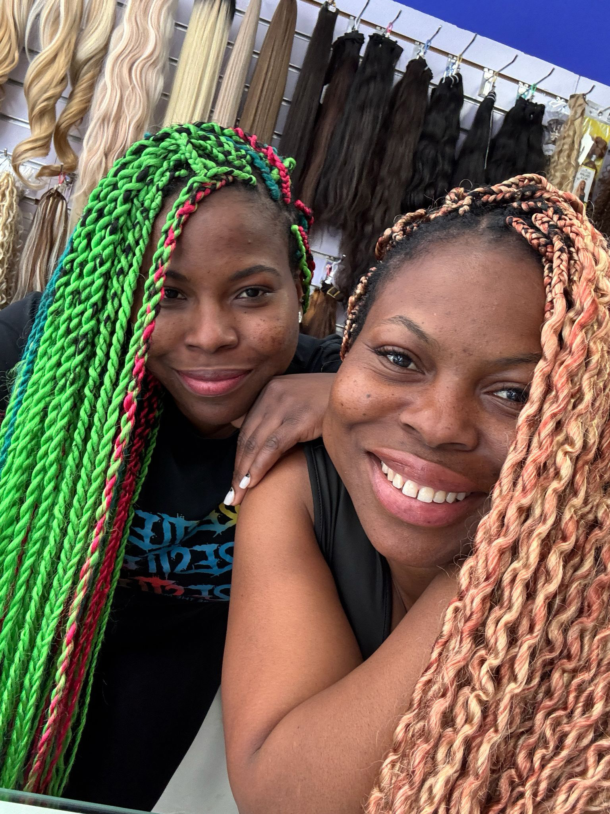

Nuestra historia, nuestra esencia
Donde la tradición se encuentra con la empatía para crear algo único

Mi historia
Cuando llegué a Mahón, sentí algo muy claro: hacía falta un espacio especializado en trenzas africanas y cuidado del cabello texturizado en Menorca.
Pero no era solo una necesidad profesional. Era algo mucho más profundo.
Yo no aprendí a trenzar solo como técnica. Aprendí desde la cultura, desde la familia, desde mis raíces. En mi historia, las trenzas no son una moda. Son identidad. Son tradición. Son memoria.
Más que estética: cuidado y acompañamiento
Con el tiempo entendí que mi misión iba más allá del arte de trenzar.
Descubrí la necesidad de acompañar a mujeres que atraviesan procesos oncológicos y que experimentan la pérdida de su cabello. En esos momentos comprendí aún más que el cabello está profundamente ligado a la identidad y la autoestima.
Por eso en Roots by Stella ofrezco asesoramiento y venta de pelucas oncológicas, con atención cercana, discreta y respetuosa.
No se trata solo de colocar una peluca.
Se trata de devolver seguridad.
De acompañar.
De sostener.
Empatía sin límites
Entendemos que tu cabello es parte de tu identidad. Cada cliente llega con su historia y lo tratamos con el respeto y la confidencialidad que merece.
Maestría artesanal
Fusionamos técnicas tradicionales nigerianas transmitidas de generación en generación con formación continua en las últimas innovaciones del cuidado capilar.
Comunidad y hermandad
Roots by Stella es más que un salón, es un espacio de sanación, conversación y apoyo mutuo donde cada mujer encuentra su tribu.
Mi Compromiso
Roots by Stella es un puente entre mis raíces y esta isla que hoy también es mi hogar.
Es un espacio donde cada persona es bienvenida.
Donde cada estilo tiene intención.
Donde cada historia importa.
Trenzamos identidad con libertad.
Y mi invitación siempre será la misma:
Trenzate libertad.

¿Quieres ser parte de nuestra comunidad?
Empieza tu transformación hoy con una consulta personalizada.
Reservar Primera Cita